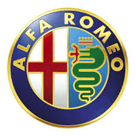

O KOMPANIJI:
Alfa Romeo je čuveni italijanski proizvođač automobila
koji se proslavio kroz istoriju auto sporta.Kompanija je osnovana 24. juna 1910. godine u Milanu.
U auto sportu je prisutna još od 1911-te godine. Od 1932-1986-te godine je bila u vlasništvu države, a 1986. postaje članica FIAT grupacije.
Februara 2007. godine došlo je do reorganizacije unutar Fiatove grupacije, i tako nastaje Alfa Romeo automobili A. D.
Osnivanje i rane godine:
Kompanija koja je transformisana u Alfa Romeo je osnovana pod imenom "Soćieta Anonima Italiana Darak" (italijanski: Società Anonima Italiana Darracq (SAID) 1906-te godine od strane francuske automobilske kuće koja je bila u vlasništvu Aleksandr Daraka (Alexandre Darracq) te i uz podršku italijanskih investitora.
Jedan od njih, Kavaliere Ugo Stela, aristokrata iz Milana, je proglašen za predsednika SAID-a 1909.
Početna lokacija firme je bila u Napulju, ali čak i pre nego što je planiranog konstruisanja fabrike počelo,
Darak odlučuje krajem 1906. da je Milano ipak bolja pozicija za fabriku te je prema tome zauzeta lokacija u predgrađu Milana,
Portelo (italijanski:Portello) gde se podiže nova fabrika na 6.700 kvadratnih metara.Krajem 1909 godine,
zaključujući da se italijanski "Darak" slabo prodaje, Stela zajedno sa italijanskim investitorima osniva novu kompaniju pod nazivom A.L.F.A.
(italijanski:Anonima Lombarda Fabbrica Automobili), koja je u samom početku i dalje bila u partnerstvu Darakom.
Prvi ne-Darak automobil proizveden u pogonima fabrike je lansiran 1910 i zvao se 24 HP.
Automobil je dizajnirao Đuzepe Merosi, koji je unajmljen 1909. radi dizajniranja novih automobila koji bi bili odgovarajući za italijansko tržište.
LOGO :
